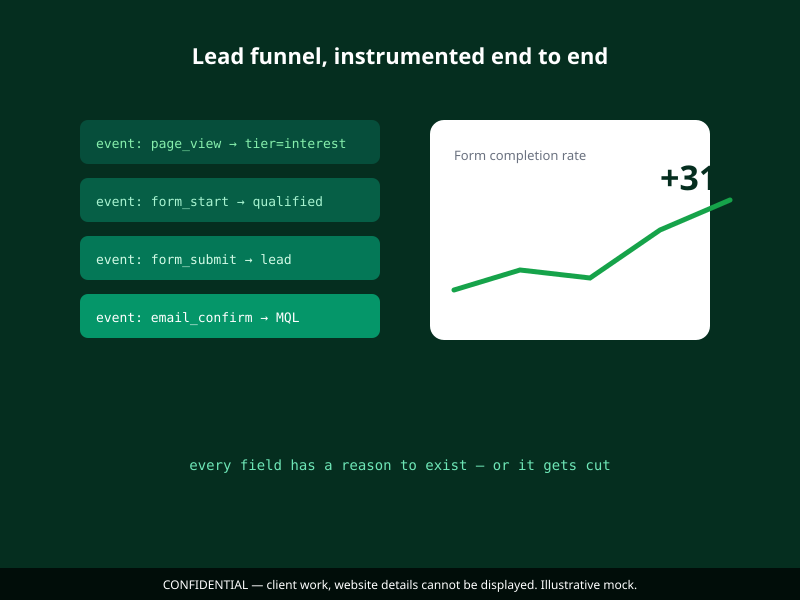

The problem
The product team had traffic, but leads came in without context: a single generic "Contact us" form mixed ready-to-buy visitors with researchers, press, and random clicks. Sales couldn't prioritize.
My role & approach
- Mapped the entire funnel end-to-end: landing → capture → confirmation email → sales handoff.
- Segmented intent: high-intent (demo request) vs. low-intent (guide download) got different forms, different fields, different follow-ups.
- Designed a modular landing page system in Figma, headline, social proof, form, CTA, so tests could assemble themselves.
- Instrumented everything: form start, form error, submit, confirmation view. Every design change validated against data.

Key decisions
1. Fields earn their place
Any field that didn't improve lead qualification got removed. The rule: if a field doesn't change how sales handles the lead, it costs us leads.
2. Confirmation is part of the funnel
We designed the post-submit email and confirmation screen with the same care as the landing page, the click is not the end.